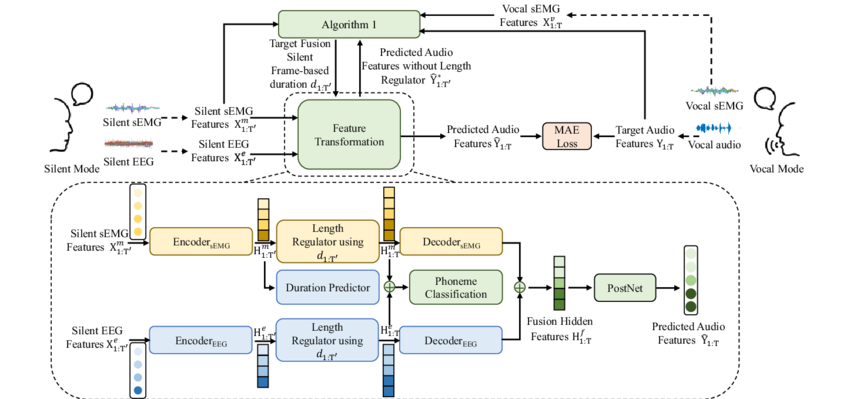
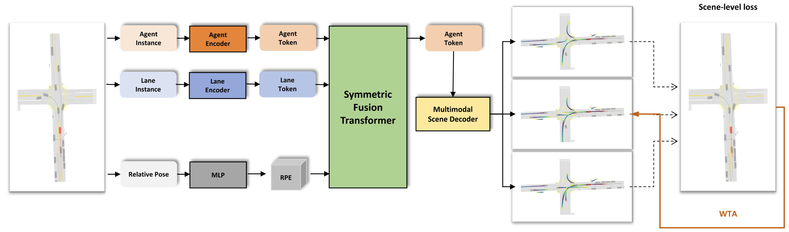
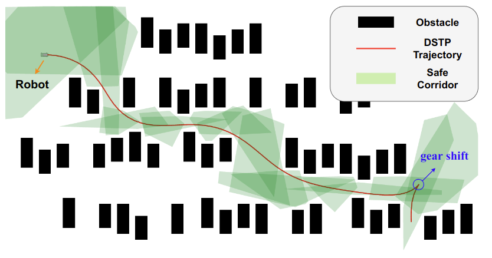
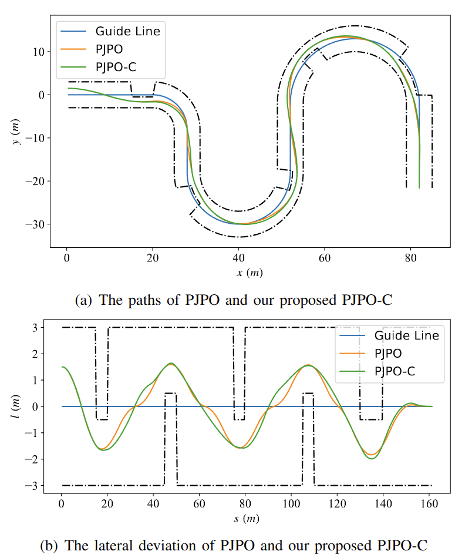
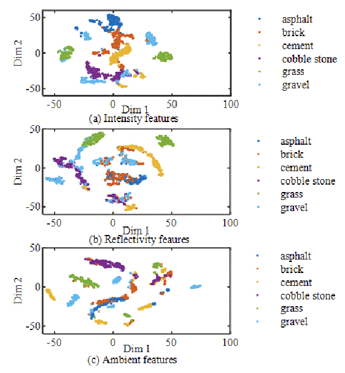
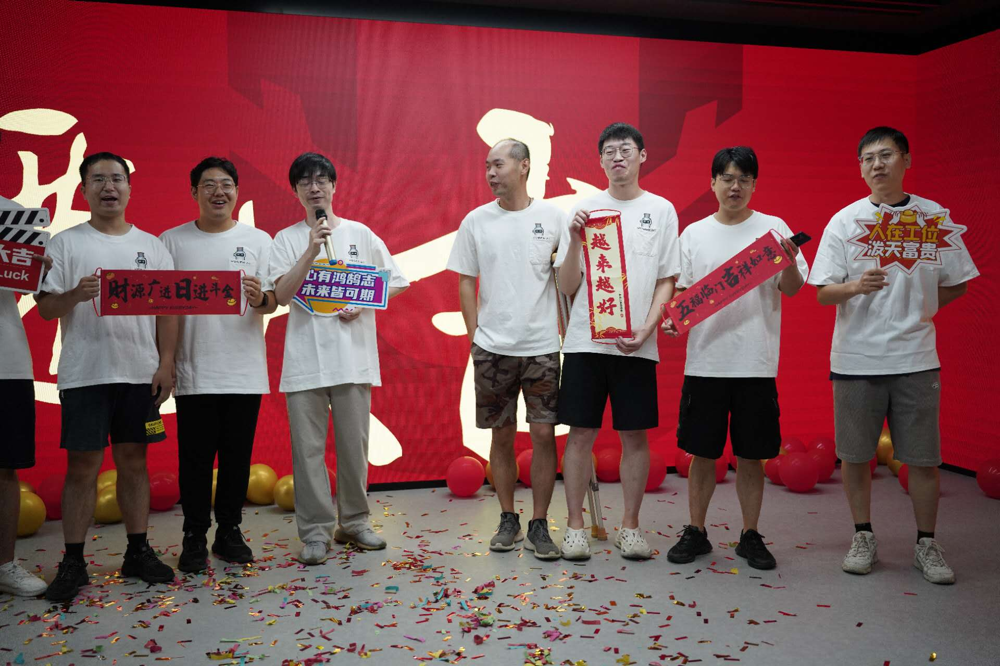
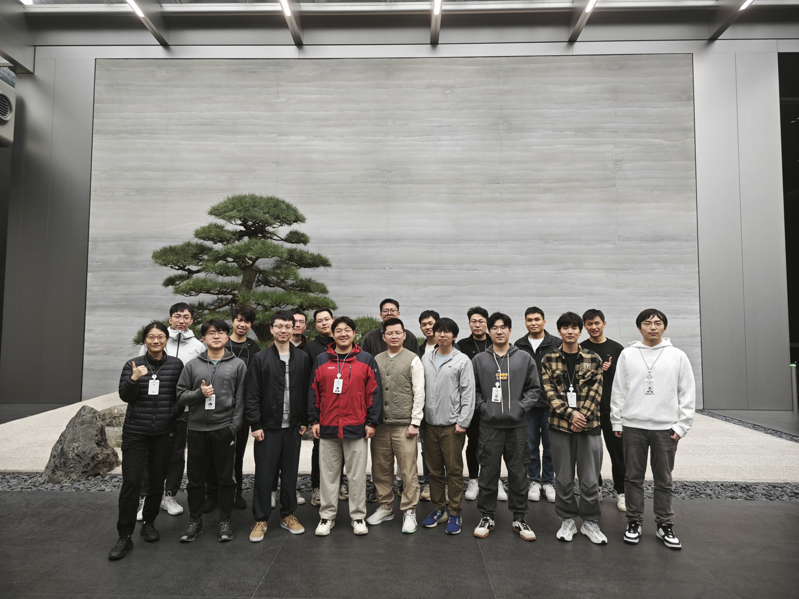

|

|
Hybrid Silent Speech Interface Through Fusion of Electroencephalography and Electromyography.
Huiyan Li,
Mingyi Wang,
Han Gao, Shuo Zhao,
Guang Li,
You Wang
INTERSPEECH, 2023
A hybrid SSI based on the converter between bimodal electrophysiological signals and audio signals. EEG and sEMG are fused through two sequence-to-sequence models, and multi-task losses are applied to achieve complementarity between speech intention and muscle activity in silent speech.
|

|
A Joint Prediction Method of Multi-Agent to Reduce Collision Rate.
Mingyi Wang, Hongqun Zou, Yifan Liu, You Wang, Guang Li
2024 China Automation Congress (CAC), Indexed by EI
A simple yet effective joint prediction methodology for multi-agent trajectory generation in autonomous driving applications, enhancing the accuracy of agent interaction modeling and reducing the collision rate among agents.
|

|
Discrete States-Based Trajectory Planning for Nonholonomic Robots.
Ziyi Zou, Ziang Zhang, Zhen Lu, Xiang Li, Mingyi Wang, You Wang, Guang Li
2023 IEEE International Conference on Robotics and Biomimetics (ROBIO)
A discrete States-based Trajectory Planning (DSTP) algorithm for autonomous nonholonomic robots, improving trajectory smoothness, efficiency, and control through optimized multi-variable representation and L-BFGS optimization.
|

|
Path Planning for Autonomous Driving with Curvature-considered Quadratic Optimization.
Ziang Zhang, Ziyi Zou, Xiang Li, Mingyi Wang, You Wang, Guang Li
2023 IEEE Intelligent Vehicles Symposium (IV)
An improved quadratic programming approach for path planning in autonomous driving that optimizes path smoothness and curvature using the Frenét frame, enhancing comfort and safety in urban environments.
|

|
Camera-Lidar-Based Terrain Multi-type Classification Using Both Spatial and Histogram Features of Lidars.
Zhen Lu, Mingyi Wang, Shuyang Yu, Yi Wu, You Wang, Guang Li
2023 3rd International Conference on Computer, Control and Robotics (ICCCR)
A lidar-camera fusion system for terrain classification in off-road robots, leveraging multiple optical channels in Lidars and depth-enhanced images to classify various terrain types.
|
Experience
After graduating from my undergraduate studies, I spent my first year as an intern at my advisor's company, primarily working on spherical robot trajectory navigation using ROS and C++.
From August 2023 to February 2024, I interned at DJI Automotive in Shenzhen. Under the guidance of my mentor, Lu Zhang, I conducted research on learning-based trajectory generation methods and a unified framework for prediction and planning. Ultimately, this project was integrated into DJI Automotive's current end-to-end model.
In April 2024, I became a visiting student under Professor Kaicheng Yu at Westlake University.
I then joined UDEER.AI for an internship, where I worked on a joint project exploring advanced agent interaction modeling methods and experimented with integrating them with reinforcement learning. This approach aimed to address the challenge of distribution shift in learning-based trajectory planning.
All these experiences have led me to where I am today.
|
|

|
Group photo with the PDC team at UDEER.AI
UDEER.AI (Former Alibaba DAMO Academy Autonomous Driving Team) in Hangzhou
While visiting Westlake University as a student, I joined the Planning, Decision, and Control group at UDEER.AI to participate in an industry-academic collaborative project.
Here, I worked on cutting-edge robotics decision-making algorithms and completed the work titled Mitigating Out-of-Distribution Issues in Motion Prediction with Autoregressive Model and Reinforcement Learning.
|

|
Group photo with the PNC team at Zhuoyu Technology (DJI Automotive)
DJI Automotive PNC team in DJI SKY CITY, Shenzhen
My internship experience at DJI Automotive was incredibly rewarding. Our team proposed the PnP model, which was eventually applied to autonomous vehicles.
After returning from the internship, I was inspired by my mentor Lu Zhang's paper at the company, and I completed my scene-consistent trajectory prediction paper: A Joint Prediction Method of Multi-Agent to Reduce Collision Rate.
|
Personal page under continuous development...
|
{kind=link}